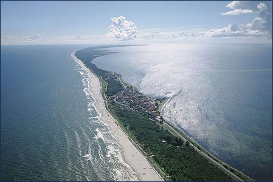
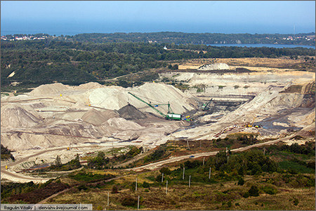
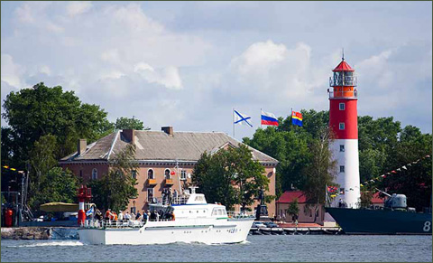
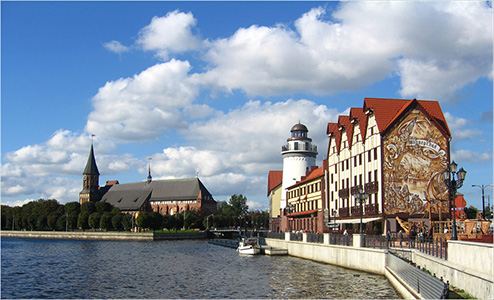
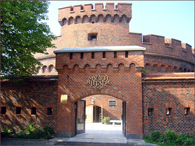

Возможно ли по России путешествовать с таким же комфортом, как по Европе?
С гостиницами с двухместным размещением, с машиной сопровождения, с вечерними ресторанами?
Да, вполне. Встречайте наш новый маршрут «Тридевятое царство»
Почему Тридевятое Царство – потому что далеко оно – за морями - долами и заграницами, а номер региона 39. Так и шутят местные жители: тридевятое царство! К тому же, каждый день мы будем жить на море, как и полагается в тридевятом царстве!
Калининградская область — Тридевятое царство, очень интересный регион. Некогда, этот край был Восточной Пруссией, Германией. А еще раньше - Швецией. Здесь жили рыцари в рыцарских замках, а местные жители молились в кирхах. Жили в домах, которые совершенно не похожи на российские. Тридевятое царство до сих пор хранит вблизи янтарных балтийских берегов, посреди сосновых лесов интересные памятники истории...
Велотур приглашает Вас проехать по Калининградской области и своими глазами увидеть какой стала бывшая немецкая Восточная Пруссия. Те, кто помнит Калининградскую область с советских времен будут приятно удивлены: хорошие дороги (хотя большинство из них - узкие из-за старинных немецких лип по обочинам), отреставрированные города (ну, по крайней мере, их центральные части), живописные променады над широкими пляжами, ухоженные парки… Вот только бывшие тевтонские замки 700 лет не реставрировались, да многие культовые сооружения чуждой нам религии подкачали (кроме тех кирх, которые приобрела себе православная церковь). Ну, а центр Калининграда поражает широкими проспектами, современными высотками чем–то напоминающими фахверк, возрожденным Кафедральным собором. Можно полюбоваться излучиной реки Преголи в районе Рыбного квартала, напоминающей парижскую Сену – вот только Нотр-Дам заменен на Кенигсбергский собор! Можно погладить хранителя ключей от Кенигсберга - знаменитого Прусского кота у Королевских ворот. А можно попробовать решить известную «Проблему семи мостов Кенигсберга», так называемую задачу Леонарда Эйлера.
Маршрут начинается в курортном городе Зеленоградск, расположенном недалеко от аэропорта Храброво, куда прибывают самолеты с большой земли. Также в Зеленоградск ходит электричка из Калининграда, куда можно прибыть поездом, например, из Москвы.
Зеленоградск (нем. Cranz), расположенный на невысоких песчаных дюнах, был основан тевтонцами в 14 веке, но статус города получил лишь в 1935. Архитектурный облик города сформировался в конце 19 - начале 20 веков, когда город обрел славу курорта. К нашим услугам красивая морская набережная, широкий городской променад с протяжённым пляжем, тенистый парк, который за городом сливается с большим сосновым бором. Словом, все что требуется для отдыха после дальней дороги в городе присутствует. Как и несколько вполне приличных ресторанов. От окраины города начинается национальный парк Куршская коса,
В городе уважают велосипедистов, ежегодно в сентябре проводится Тур де Кранц (до Калининграда и обратно).

Куршская коса - уникальная полоска суши между Балтийским морем и лагуной, на которой ветры столетиями надувают огромные дюны (самая большая 67 м высотой, выше только дюна Пила в заливе Аркашон в Аквитании). Большинство из дюн – «мертвые» - они засажены растительностью и специальными сортами хвойников (усилия многочисленных поколений людей) – и поэтому неподвижны. «Живые», недавно образованные дюны, перемещаются под воздействием ветров – иногда на десятки и даже сотни метров в год и создают угрозы для поселков.
На Куршской дороге (это, кстати, старинный почтовый тракт между Германией и Россией) много достопримечательностей. Стоит посетить дюну Эфа (42-й км), танцующий лес (37-й км) из фантастически искривленных стволов сосен, высоту Мюллера (32-й км) (это не тот который со Штирлицем, а основоположник практики сохранения дюн засаживанием специальных сортов деревьев). Надо оставить время на Музейный комплекс (17-й км) и Королевский лес с питомником гигантских туй (7-й км) Для любителей птиц есть полевой стационар кольцевания птиц Фрингилла.
Мы покидаем нашу гостиницу в Зеленоградске и окраинами города по песчаным дорогам вдоль моря отправляемся на юг. Скоро дорога становится непроезжаемой без фатбайков, но мы перемещаемся на пляж – вдоль линии прибоя ехать на велосипеде возможно, попутно занимаясь поисками янтаря (что вполне реально, и мы расскажем секрет)/
Десяток километров – и мы возвращается на высокий берег, и окраинами коттеджных поселков выходим на новенький тракт, ведущий вдоль строящего центра отдыха в город Пионерский. Неподалеку – в деревне Куликово есть центр ремесел, где энтузиасты собрали старинные инструменты и приспособления, главным образом, по обработке янтаря. Заведует всем этим человек, знающий про янтарь гораздо больше, чем может себе представить обычный человек.
Пионерский (Neukhren- Нойкурен) – типичный немецкий курортный городок с брусчаткой, кирхой и приморским парком. В Пионерском долгие годы велось строительство променада, выполняющего также берегоукрепительную функцию. Теперь это самый длинный в области променад (1,5 км), идущий вдоль прекрасного песчаного пляжа.
Покидая Пионерский, мы немного (3 км) займемся велотриалом (ездой по тропинкам), чтобы миновать автомобильную дорогу, ведущую в Светлогорск. На нашем пути будет «Камень лжи» (аналог римского), в который желающие могут рискнуть сунуть руки. «Триал» кончается, и мы попадаем с райский город Светлогорск (Rauschen- Раушен), расположенный на самом краю Земландии (сембы – так называли себя древние пруссы). Город очень ухожен и имеет все атрибуты курорта – огромный парк, озеро, променад и даже фуникулер со Светлой горы (высотой около 60 м) на пляж.

Мы съезжаем со Светлой горы по крутому спуску через красивый лес и двигаемся по шоссе по направлению к Янтарному.
Поселок Янтарный (нем. Palmniken –Пальмникен) знаменит своим янтарным комбинатом, в котором мы сможем посетить музей, и единственным в мире промышленным карьером янтаря (в Калининградской области сосредоточено до 90% мировых запасов этого камня).
Роскошен городской парк, полого спускающийся к песчаному пляжу. В Янтарном расположено старинное здание, являющееся уменьшенной копией знаменитой капеллы Святого Георгия, находившейся до 1944 года (разрушена во время бомбежки) в берлинском саду замка Монбиньон. Старинное здание кирхи представляет собой красивую историческую достопримечательность края, восстановленную практически в первозданном виде усилиями РПЦ. Внутреннее убранство лютеранской кирхи первоначально было оформлено в романском стиле, а в нише западной стены возвышался орган. В послевоенные годы в здании кирхи располагались поочередно сельский клуб, бильярдная, непродолжительное время спортивный клуб и склад. Витражи и орган были утрачены, к 1990-м годам кирха представляла собой полуразвалившееся здание. В январе 1991 года бывшая лютеранская кирха была отдана РПЦ и освящена в честь Казанской Иконы Божьей Матери.
После Янтарного мы продолжаем двигаться по «липовой» дороге. Нельзя пропустить огромный мемориал в селе Русское на месте замка Germau. Тысячи советских и немецких солдат лежат в могилах в нескольких сотнях метров друг от друг, молчаливо свидетельствуя о бессмысленности войн. Последние несколько километров – довольно напряженная дорога – это единственный путь на российскую базу военного морского флота Балтийск. Балтийск великолепен!
Балтийск (Pillau –Пиллау) носит отпечаток советского закрытого города, хотя лицезреть и фотографировать военные корабли из окон гостиницы не возбраняется.

В городе многочисленные достопримечательности: Монументальная цитадель Пиллау, музей Балтийского флота, Маяк (1813-1816 гг.), Кафедральный Свято-Георгиевский морской собор и новый храм Александра Невского. Огромная императрица Елизавета (она здесь бывала в тот короткий промежуток времени, когда Пиллау принадлежал России) стоит у длинного мола, уходящего в море – здесь самая западная точка России.
Небольшой паром – если позволит время - может перенести вас на Балтийскую косу, идущую от Балтийска до польского побережья. К сожалению, попасть в Польшу по косе пока невозможно, так как между российской и польской частями косы отсутствует пограничный переход.
На косе можно осмотреть южный антипод цитадели Пиллау, разрушенные немецкие аэродромы и ангары.
Покидаем Балтийск, а у Приморска (Fischhausen) сворачиваем на живописную старинную прусскую дорогу, ведущую нас в город Светлый (Zimmerbude), на берегу Калининградского морского канала. Поселение датируется серединой 15 в, но время не сохранило замка (Королевского рыбацкого поместья). Сейчас – это симпатичный ухоженный современный город.
До Калининграда здесь рукой подать, но не для велосипедистов, и нам придется кружить вокруг да около, по тихим второстепенным дорожкам, чтобы избежать автомобильного трафика. Но вот – Калининград. Въезжаем по велодорожке. Минуя центр и знаменитый собор, мы заселяемся в гостиницу в нескольких км от центра.
Калининград
Наш маршрут заканчивается. Но тем, кто не был здесь (или был, но в советское время) советуем задержаться – город стал по-настоящему красив.
С июля 2005 года снова с высокого фронтона Королевских ворот на город взирают три его «исторических отца»: Оттокар II Пшемысл — богемский король, основатель Кёнигсберга, Фридрих I, взошедший на королевский престол в Кёнигсберге не без помощи Петра I, и последний гроссмейстер Тевтонского ордена, что стал герцогом Альбрехтом — основателем первого светского лютеранского государства в Европе. Их скульптурные фигуры возрождены из небытия трудом и высоким мастерством реставраторов из Эрмитажа.

Первый Кафедральный собор построили на рубеже XII и XIII веков в Альтштадте — «старом городе», к которому примыкали поселения Лебенихт и Кнайпхоф. Паства постепенно прибывала, поэтому старый собор разобрали на кирпичи и построили новую, более крупную церковь. Официальная дата рождения собора выглядит красиво — 13 апреля 1333 года. В то время храм был католическим и посвящался Высокосвященному телу Иисуса Христа, Деве Марии, всем святым и святому Адальберту. После Реформации и отделения Пруссии от власти папы римского Кенигсбергский собор стал главным лютеранским собором Пруссии.
За долгие века собор несколько раз обновляли и перестраивали. Самая безжалостная «перестройка» случилась в 1944, когда англичане накрыли Кенигсберг ковровыми бомбардировками. Однако сравнять с землей его все-таки не удалось. Стены выстояли, но внутреннее убранство выгорело дотла. На долгие годы собор превратился в печальную тень былого величия. Руины собора спасла от сноса могила Канта. Восстановление собора началось в начале девяностых и завершено в 2005 году – к 750-ю Кенигсберга.
Внешний облик собора почти полностью соответствует историческому, но реставраторам все же пришлось пожертвовать отдельными деталями. Новая крыша покрыта не черепицей, а мелью — для снижения веса, а часы на башне, хоть и выглядят старинными, скрывают электронный механизм со спутниковой связью. В 2007 немецкие мастера собрали большой орган - 8500 труб, 4 мануала, 90 регистров, объединенных оптоволоконной связью и нашпигованные современными технологиями.
Город окружают несколько уровней фортификационных сооружений. Средневековая стена, два вальных оборонительных обвода и кольцо фортов. Сооружения обводов были частично демонтированы уже после Первой мировой войны, а часть сохранившихся - сейчас используется утилитарно – магазины, склад, даже СТО, а иногда - музеи. Кольцо фортов «Ночная перина» – 12 больших и 5 малых в 5 км от городских стен - это места, где шли ожесточенные бои последней войны с немцами. Форты пострадали, но не сильно – артиллерия тех времен была не в состоянии разрушить сооружения, созданные в середине 19 в. В самом знаменитом форте - № 5 - сейчас музей Великой Отечественной войны.
Конечно же, нельзя не посетить и Музей янтаря и знаменитый Калининградский зоопарк.

Заявиться на поход можно со страницы Календарь нашего сайта